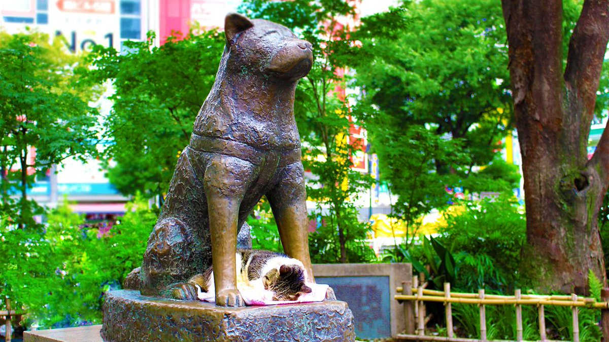

سگ آکیتا جثهای بزرگ و باابهت و شخصیتی شجاع و فوقالعاده وفادار داره و معروفترین نژاد سگ ژاپنی در دنیاست. این نژاد جزو دسته سگهای اشپیتز قرار داره و شخصیت خاصی داره، ساکته و زیاد اهل پارس کردن نیست و رابطهای خاص و منحصربفرد با صاحبش برقرار میکنه. اما این نژاد سگ برای هرکسی مناسب نیست! ما در این مطلب میخوایم این نژاد زیبا و باابهت رو بهتون معرفی کنیم و در مورد تاریخچه، طرز نگهداری، خلق و خو و … با شما صحبت کنیم. با ما در ادامه همراه باشید.

تاریخچه سگ آکیتا
آکیتا یکی از نژادهای محبوب در دسته اشپیتزهاست و میشه گفت معروفترین و بزرگترین سگ در بین ۶ نژاد اصیل ژاپنیه (آکیتا اینو، شیبا اینو، هوکایدو، کای کن، کیشو کن و شیکوکو کن).
این سگ اولین بار در استان آکیتای ژاپن به وجود اومده و به همین دلیل هم اسمش سگ آکیتا شده. به خاطر ویژگیهای خاص و ممتاز این سگ تا مدتهای طولانی تنها خانواده سلطنتی ژاپن حق نگهداری از نژاد سگ آکیتا اصل رو داشتن!
بعضیها معتقدن که این نژاد برای شکار گراز وحشی، گوزن و خرس سیاه به وجود اومده؛ بعضی دیگه میگن که آکیتاهای بزرگ و باابهت رو برای حضور در تفریح غیرانسانی و غیراخلاقیِ «جنگ سگها» به وجود آوردن.
در هرصورت، دلیل اصلی پرورش این سگ هرچی باشه امروزه آکیتا به عنوان سگی فوقالعاده وفادار با شخصیت و بدن قوی شناخته میشه.
انواع سگ آکیتا
آمریکاییها عاشق نژادهای خالص و ممتاز هستن و خیلی زود عاشق سگ آکیتا شدن. به همین دلیل سعی کردن تغییرات دلخواه رو در این نژاد به وجود بیارن و به این ترتیب دو گونه سگ آکیتا به وجود اومد:
- آکیتای ژاپنی
- آکیتای آمریکایی
امروزه سگ آکیتای ژاپنی به نام سگ آکیتا اینو یا آکیتای ژاپنی شناخته میشه و آکیتای آمریکایی به اسم آکیتا یا همون آکیتای آمریکایی معروفه. در اکثر کشورها و همینطور موسسههای مختلف مثل کنل کلاب (AKC) این دو نوع آکیتا به عنوان دو نژاد جداگانه در نظر گرفته میشن، اما بسیاری معتقدن که این دو تا سگ تنها دو گونه متفاوت از یک نژاد واحد هستن.
تفاوت این دو نوع چیه؟
- سگهای آکیتای آمریکایی جثهای بزرگتر و وزن بیشتری دارن. تنوع رنگی بیشتری دارن و اغلب صورتشون سیاه رنگه.
- سگ آکیتا ژاپنی جثه کوچکتری دارن، اغلب به رنگ سفید و حنایی (نارنجی) یا سفید خالص هستن و هیچ لکه سیاهی روی صورتشون دیده نمیشه.
- سگ آکیتا آمریکایی سر بزرگتری داره و دمش فرخوردگی کمتری داره.
- هردو بسیار مستقل، بااعتماد به نفس و وفادار هستن و نسبت به صاحب و اعضای خانواده حس محافظت زیادی دارن.
مشخصات و خصوصیات اخلاقی آکیتای ژاپنی و آمریکایی تا حد زیادی شبیه به همه و شاید تنها تفاوت بارز اونا در ویژگیهای ظاهریشون باشه.

مشخصات سگ آکیتا
- وزن آکیتا اینو ژاپنی:
نرها ۳۲-۳۹ و مادهها ۲۳-۲۹ کیلوگرم
- قد آکیتا ژاپنی:
نرها ۶۴-۷۰ و مادهها ۵۸-۶۴ سانتیمتر
- وزن آکیتا آمریکایی:
نرها ۴۵-۵۹ و مادهها ۳۲- ۴۵ کیلوگرم
- قد آکیتا آمریکایی:
نرها ۶۶-۷۱ سانتیمتر و مادهها ۶۱-۶۶ سانتیمتر
طول عمر سگ آکیتا چقدره؟
طول عمر آکیتاها تا حد زیادی به تغذیه و نحوه نگهداری و وضعیت سلامتی بستگی داره؛ اما سگ های نژاد آکیتا به طور کلی بین ۱۰-۱۵سال میتونن عمر کنن.

خلق و خو و خصوصیات سگ آکیتا
سگهای آکیتا اصلا برای زندگی یا کار در گروه پرورش پیدا نکردن و ترجیح میدن همیشه تنها یا نهایتا جفت باشن. سگهای آکیتای امروزی هم هنوز این خصلت رو دارن و دوست دارن تنها باشن و حتی گاهی رفتار خشن و پرخاشگرانهای نسبت به سگهای غریبه نشون میدن.
البته اگه آکیتا رو از همون تولگی خوب اجتماعیش کنید، میتونه تحمل کردن و زندگی در کنار سایر سگها و حیوانات رو یاد بگیره. اما احتمالا سعی میکنه رئیس بازی دربیاره و یه سر و گردن از اونا بالاتر باشه.
آکیتاها خیلی مغرور و استقلال طلب هستن و دوست دارن به حریم خصوصیشون احترام بگذارید. بنابراین سعی نکنید آکیتا رو «مجبور» به انجام کاری بکنید یا خدای نکرده تنبیهش کنید.
سگ آکیتا فوقالعاده به صاحبش وفاداره و محبت عمیقی نسبت به صاحب و اعضای خانوادهش داره و حتی ممکنه انقدر حس مراقبت از شما داشته باشه که تو خونه هرجا که میرید دنبالتون بیاد. اما برعکس نسبت به حضور هر غریبهای تو خونه (حتی مهمونا) رفتار صمیمیانهای نشون نمیده و خیلی از غریبهها خوشش نمیاد.
آکیتاها جزو بهترین سگهای نگهبان به حساب میان و تنها وقتی پارس میکنن که واقعا خطر مهمی وجود داشته باشه.
اگه بچه کوچیک دارید آکیتا همون حس وفاداری و محافظت رو نسبت به اون هم خواهد داشت؛ اما به نکته زیر توجه کنید:
آیا آکیتا بهترین نژادیه که میتونم انتخاب کنم؟
جواب این سوال بستگی به این داره که بر اساس چه ملاک هایی تصمیم گرفتید سگ آکیتا رو انتخاب کنید؟ اگر ملاکتون فقط ظاهر سگ بوده، باید بگم دارید اشتباه بزرگی مرتکب میشید!😲
برای انتخاب مناسب ترین نژاد سگ برای زندگی با شما بهتره اول ویژگی هایی مانند خلق و خوی سگ، میزان انرژی و رابطه اش با آدم ها، بچه ها و حیوانات دیگه، تحمل تنها موندن، میزان واق واق و ریزش مو و کلی فاکتورهای دیگه رو هم در نظر بگیریم.
مثلا آکیتاها برای کسانی که بچه یا گربه یا حیوان خانگی دیگه ای توی خونه دارن، اصلا انتخاب مناسبی نیستن!
متاسفانه انتخاب مناسب ترین سگ کار زمان بریه و نیاز به تحقیق و بررسی زیادی داره.
اما خیالتون راحت، ما این راهو بلدیم و برای کمک به شما یه ایبوک درست کردیم که با خوندنش میتونید در کوتاه ترین زمان ممکن بهترین تصمیم رو در مورد نژاد سگ مناسبتون بگیرید و مناسب ترین نژاد سگ مناسب با سبک زندگیتون رو انتخاب کنید.
برای من با علایق، سبک زندگی و شرایط محیط اطرافم چه نژادی از بقیه بهتر و سازگارتره؟ این کتاب به این سوال پاسخ میده. یه تست داره، میزنی و میرسی به بهترین نژادی که برات خوبه و با راهنمایی های بعدی کتاب درباره جنسیت و اسم سگ تصمیم میگیری.
اصول نگهداری از سگ آکیتا
این سگ ها شخصیتی مغرور و استقلال طلب دارن، اما در عین حال رابطهای عمیق و احساسی با شما و اعضای خانواده برقرار میکنن. این سگها اصلا از تنها موندن خوششون نمیاد و وقتی با شما و اعضای خانواده باشن خوشحالترین سگ دنیا هستن.
این سگ ها بیش فعال نیستن، اما در طول روز به حداقل ۳۰ دقیقه الی ۱ ساعت فعالیت و ورزش نیاز دارن تا همیشه سالم و سرحال باشن.
نژاد آکیتا خیلی باهوشه و زود حوصلهش سر میره و اگه کلافه بشه ممکنه دچار انواع مشکلات رفتاری مثل پارس کردن، چاله کنی، جویدن همه چیز و پرخاشگری بشه. بنابراین آکیتا رو در فعالیتها و برنامههای خانوادگیتون شریک کنید و هیچ وقت به مدت طولانی آکیتاتون رو تنها تو خونه رها نکنید.
نگهداری از آکیتا در آپارتمان خیلی توصیه نمیشه، هرچند این سگ میتونه تا حدی خودش رو با هر شرایط زندگی وفق بده. بهترین حالت یه حیاط امن با دیوارهای بلنده تا آکیتا بتونه حسابی توش فعالیت کنه.

مراقبت از موهای آکیتا
آکیتاها اصولا سگهایی بسیار تمیز هستن و در مقایسه با سگهای دیگه بوی خیلی کمتری میدن. موهای این سگ نیاز به مراقبت زیادی نداره، اما در هر صورت بهتره موهای متراکم و پرپشت آکیتا رو حداقل هفتهای یک بار برس بکشید تا ظاهر بهتری داشته باشه.
آکیتاها ریزش موی چندان زیادی ندارن، اما دو بار در سال (اوایل بهار و اوایل پاییز) موریزیِ نسبتا شدیدی پیدا میکنن و موهاشون همه جای خونه دیده میشه. بنابراین در این دوران بهتره موهاش رو بیشتر برس کنید تا از ریختن موهای اضافه در سطح خونه جلوگیری کنید.
کوتاه کردن ناخن
ناخنهای آکیتا باید به طور مرتب کوتاه بشه، چون شکسته شدن ناخن برای سگ خیلی دردناکه و باعث مشکلات زیادی میشه. برای کوتاه کردن ناخن آکیتا از ناخنگیر مخصوص سگ استفاده کنید و اگه فکر میکنید کار سختیه به دامپزشک یا آرایشگاه سگ برید.
سلامت دهان و دندان
دندان سگ هم مثل دندانهای ما ممکنه دچار پوسیدگی و جرم بشه. بنابراین لازمه که به طور مرتب دندانهاشو با مسواک و خمیردندان مخصوص سگ مسواک کنید. اگه از سن کم و تولگی این کار رو شروع کنید آکیتا راحتتر با مسواک زدن کنار میاد و بهش عادت میکنه.
برای مراقبت اصولی از سگتون بهتره لوازم مورد نیاز برای اونو خریداری کنین،خیالت راحت ما این راهو بلدیم و توی مطلب وسایل سگ میتونین لیست این لوازم رو بخونین.

آموزش و تربیت سگ آکیتا
کنترل و تربیت سگ آکیتا کمی دشواره و نیاز به صاحبی داره که خودش هم شخصیت قوی و محکمی داشته باشه. آکیتا بسیار قوی و پرانرژیه و نیاز به تربیت و آموزش درست داره تا بتونه این انرژی رو از طریق درست تخلیه کنه.
این سگ فوقالعاده هم باهوشه، اما خیلی زود وسط جلسه آموزشی حوصلهش سر میره و دیگه به حرفتون گوش نمیکنه. از طرفی این سگ شخصیتی مستقل داره و به راحتی رئیس بودن شما رو قبول نمیکنه. به همین دلیل، نگهداری از سگ آکیتا به کسانی که تا حالا تجربه نگهداری از سگ نداشتن توصیه نمیشه. بهتره این کار توسط یه مربی خبره انجام بشه.
اما اگه میخواین که خودتون تربیتش کنین، حتما مقاله تربیت سگ نگهبان مطالعه کنین. توی این مطلب به شما توضیح دادیم که سگهای نگهبان چطوری باید تربیت کنین.
بهترین راه برای تربیت توله سگ آکیتا چیه؟
برای اینکه آکیتای مودب و خوش رفتاری داشته باشید لازمه که به جا و به موقع بهش آموزش بدید و از همون تولگی تربیتش رو شروع کنید. گفتیم که این سگ نسبت به سگهای دیگه و غریبهها رفتار دوستانهای نداره، بنابراین لازمه از بچگی اجتماعی بشه تا رفتار درست با بقیه رو یاد بگیره.
اولین قدم برای تربیت سگهای باهوش و مغرور آکیتا اینه که «اطلاعات درست در مورد نحوه تربیت اون ها رو به دست بیارید»
بعد از اینکه اطلاعات درست رو به دست آوردید ، وقت اینه که سگ آکیتاتون رو تربیت کنید. مطمئن باشید که اگر اطلاعات درستی داشته باشین میتونین بهترین مربی برای سگ خودتون باشید.
قطعا همه شما در رفتار با سگتون اشتباهاتی مرتکب میشید که این اشتباهات باعث میشن به جای داشتن سگ حرف گوش کن و خوش رفتار، یه سگ خودسر و اذیت کن داشته باشید.
پس قدم سوم اینه که این اشتباهات رو در رفتارتون با سگ آکیتا اصلاح کنید!
برای یاد گرفتن نحوه آموزش درست به سگ آکیتا و اصلاح کردن اشتباهاتی که در رفتارتون باهاش مرتکب میشید، ایبوک جامع تربیت سگ که توسط تیم پت پرس تولید شده، به کمکتون میاد!
برای آموزش سگ به شیوه درست باید بدونین چه موقع، کجا، چه رفتاری رو چه جوری بروز بدید که سگ ببینه و ازش یاد بگیره. این ایبوک قدم به قدم و کاربردی به شما یاد میده از روز اول با سگ چه جوری رفتار کنین و چه چیزهایی رو یادش بدید و کمک میکنه یه سگ با تربیت و خوش رفتار تحویل جامعه بدید 

بیماریهای نژادی سگ آکیتا
هر سگی در طول زندگیش ممکنه به بیماریهایی مبتلا بشه؛ اما برخی بیماریهای سگ هستن که در یک نژاد خاص رایجتر هستن.
آکیتا به طور کلی نژادی بسیار سالم و سرحاله و همونطور که دیدیم در ژاپن به عنوان نماد سلامتی و طول عمر شناخته میشه. با این حال اگه قراره از یه آکیتای بزرگ و مهربون نگهداری کنید مراقب بیماریهای زیر باشید:
چاقی و اضافه وزن
آکیتاها سگهایی بزرگ هستن و نیاز به غذای زیادی دارن. اما اگه مراقب حجم غذای روزانهش نباشید ممکنه سگتون به زودی دچار اضافه وزن و چاقی بشه. همونطور که میدونید چاقی در سگها خیلی خطرناکه و میتونه منجر به بیماریهای مفاصل، ناراحتیهای گوارشی، کمردرد و بیماریهای قلبی-عروقی بشه.
مشکل نفخ یا اتساع معده
اتساع معده و چرخش معده که در اصلاح عموم بهش نفخ گفته میشه در سگهای بزرگ مثل آکیتا که قفسه سینه بزرگی دارن رایجه. این مشکل به ویژه زمانی پیش میاد که سگتون تمام حجم غذای روزانهش رو در یک وعده بخوره، سریع غذا بخوره یا بلافاصله بعدش مقدار زیادی آب بنوشه یا بعد از غذا فعالیت بدنی شدید بکنه. این مشکل در سگها خطرناکه و ممکنه باعث مشکلاتی مثل افزایش فشار خونه و حتی شوک بشه. به همین دلیل خیلی مهمه که غذای سگ آکیتا رو در دو وعده بهش بدید و اجازه ندید بعد از غذا فعالیت بدنی شدید بکنه.
سایر بیماریها
علاوه بر این، آکیتا مثل خیلی از سگها ممکنه مبتلا به بیماریهایی مثل اختلالات ارثی چشم و هیپ دیسپلازی (شرایطی که منجر به مشکلات حرکتی میشه) بشه. بنابراین معاینه مرتب چشم و لگن و مفاصل آکیتا توسط دامپزشک میتونه اهمیت زیادی داره.

ویژگیهای تغذیه و غذای سگ آکیتا
آکیتاها بسیار پرانرژی و فعالن و جثه بزرگی هم دارن، بنابراین لازمه که رژیم غذایی باکیفیتی داشته باشن. رژیم غذایی سگ تا حد زیادی به سن، جنسیت و میزان فعالتش بستگی داره و بهتره در موردش با دامپزشکان تغذیه پت پرس مشورت کنید . اما به طور کلی آکیتاها به پروتئین، کروبوهیدرات، چربیهای مفید، ویتامینها و مواد معدنی نیاز دارن.
از طرفی این نژاد مستعد چاقی و اضافه وزنه و نباید بیش از حد نیازش غذا بخوره. بنابراین در مورد مقدار غذای روزانهش رو هم بهتره دامپزشک تغذیه براساس سن و شرایط سگتون مقدار مناسب غذا رو مشخص کنه.
آکیتاها نسبت به غذا و ظرف غذاشون احساس مالکیت زیادی میکنن. هرچند این حس مالکیت و محافظت رو با تربیت تا حد زیادی میتونید کاهش بدید، اما باز هم توصیه میکنیم اجازه ندید حیوانات خانگی دیگه یا بچهها موقع غذا خوردن به آکیتا نزدیک بشن.
همیشه آب تازه و خنک در اختیار سگتون قرار بدید؛ اما به خاطر مشکل اتساع معده که در نژاد آکیتا رایجه نذارید بلافاصله بعد از غذا، حجم زیادی آب بخوره.
توصیه ما برای تغذیه آکیتا استفاده از رژیم غذایی پت پرسیه که اختصاصی و با توجه به نیازهای سگ شما نوشته میشه و میتونید در منزل یک غذای بالانس شده و فرموله شده توسط دامپزشک رو برای سگتون درست کنید.
اگه در مورد نحوه تغذیه سگ اطلاعات کاملی ندارین، پیشنهاد میکنیم مطلب «غذای سگ» رو مطالعه کنید و اگه تجربه نگهداری از سگ رو میدونین ولی در مورد تغذیه این نژاد میخواین بیشتر بدونین، بهتره مطلب غذای سگ اشپیتز رو بخونین چون سگ آکیتا هم یکی از نژادهای دسته سگهای اشپیتز محسوب میشه.

داستان سگ ژاپنی هاچیکو ؛ اسطوره مشهورِ وفاداری
هاچیکو اسم یه سگ آکیتا ژاپنی مشهوره که در دهه ۱۹۲۰ با صاحبش، استاد دانشگاه توکیو زندگی میکرده. این سگ آکیتا به صاحبش خیلی وفادار و وابسته بود، تا حدی که هرروز عصر به ایستگاه قطار میرفته و منتظر رگشتن صاحبش از سرکار میشد.
بعد از اینکه صاحبش در سال ۱۹۲۵ فوت میکنه این سگ وفادار به مدت ۱۰ سال و تا زمان مرگش هر روز، زیر باد و باران و آفتاب طبق همون ساعت همیشگی جلوی ایستگاه میرفته و منتظر صاحبی میشده که دیگه زنده نبود!
داستان وفادارای باورنکردنی این سگ باعث شد هاچیکو در ژاپن به نماد وفاداری تبدیل بشه و بعد از مرگش مجسمهای شبیه به خودش در ایستگاه شیبویا نصب شد و از اون به بعد کتابها و فیلمهای متعددی در مورد این سگ اسطورهای ساخته شده.
یکی از معروفترین این فیلمها «هاچیکو؛ داستان یک سگ» هست که البته نسخه آمریکاییه و تغییراتی در اصل داستان داده شده. اما فیلمی بسیار پراحساس و لطیفه و تماشای اون رو بهتون پیشنهاد میکنیم.
تصویر زیر یکی از معدود تصاویریه که از هاچیکوی افسانهای به جا مونده.
تفاوت سگ آکیتا و شیبا اینو چیه؟
سگ شیبا اینو در سالهای اخیر در شبکههای مجازی خیلی مشهور و سلبریتی شده و استیکرها، تصاویر و فیلمهای متعددی ازش وجود داره. شیبا اینو از نظر ظاهری خیلی به آکیتا شبیهه، تا حدی که خیلی از افراد این دو تا رو با هم اشتباه میگیرن.
مهمترین تفاوت آکیتا و شیبا اینو جثه و اندازه اوناست.
- شیبا اینو جثهای خیلی کوچک تا متوسط داره و به همین دلیل هم برای نگهداری در آپارتمان و خونههای کوچیک مناسبتره.
- اما آکیتا در دسته سگهای بزرگ قرار میگیره و به فضای زیادی برای زندگی و فعالیت نیاز داره.
- آکیتا شخصیت خاص و مغروری داره، به تربیت و آموزش فراوان نیاز داره و برای افراد تازهکار مناسب نیست.
- اما شیبا اینو خیلی دوستانهتره و برای افراد تازهکار هم مناسبه، هرچند این سگ هم به تربیت اصولی نیاز داره.
- سگ آکیتا برای نگهبانی مناسبه، اما شیبا اینو به خاطر رفتار دوستانهای که با همه داره اصلا برای نگهبانی مناسب نیست؛ هرچند میتون حضور غریبه رو به شما اطلاع بده.
در تصویر زیر میتونید تفاوت اندازه این دو سگ ژاپنی رو مشاهده کنید.
حقایق جالب در مورد نژاد سگ آکیتا
- سگ آکیتا در فرهنگ ژاپن جایگاه ویژهای داره و به خاطر ویژگیهای شخصیتیش مورد احترام مردم ژاپنه.
- آکیتا در ژاپن نماد محافظته وطبق رسوم وقتی یه زوج ژاپنی وقتی بچهدار میشن یه مجسمه کوچیک آکیتا کادو میگیرن.
- آکیتا تنها نماد محافظت نیست و به عنوان نماد سلامت، شادی و عمر طولانی شناخته میشه.
- در سال ۱۹۳۱ دولت ژاپن نژاد آکیتا رو به عنوان سرمایه ملی ژاپن معرفی کرد.
- جالبه بدونید هلن کلر یکی از اولین نفراتی بود که سگ آکیتا رو به ایالات متحده آورد. هلن کلر در سفری که به ژاپن داشت تحت تاثیر شجاعت و شخصیت این سگ قرار گرفت و با خودش یه توله آکیتا به آمریکا آورد.
- هاچیکو معروفترین سگ آکیتا در دنیاست و داستانها و فیلمهای زیادی در موردش ساخته شده.
- استان آکیتا منطقهای سردسیر و کوهستانیه و اغلب پوشیده از برفه. به همین دلیل سگهای آکیتا تحمل زیادی در برابر سرما دارن و پوشش دولایه موهاشون اونا رو گرم نگه میداره.
نظر شما چیه؟
تا حالا تجربه نگهداری از سگ نژاد آکیتا رو داشتید؟ به نظرتون نگهداری و تربیت این سگ سخته یا آسون؟ میشه این سگ رو تو آپارتمان هم نگهداری کرد؟ لطفا برای ما کامنت بگذارید و نظر، تجربیات و سوالات خودتون در مورد نژاد آکیتا رو با ما در میون بگذارید. ما در اسرع وقت به سوالات شما پاسخ میدیم.


سلام
من نمیدونم آکیتا بگیرم یا گلدن رتریور. جایی که من زندگی می کنم سردسیره و تا حالا سگ نداشتم ولی چیزای زیادی از سگ ها میدونم. یه چیز دیگه اینکه من نهایتا ۱ ساعت میتونم سگم رو به پیادهروی ببرم. با این شرایط، چه نژادی برام مناسب تره؟ ممنون میشم پاسخ بدید و لطفا لینک نفرستید ممنون 🌷
سلام آیدا جان
هردوی این سگ ها که گفتی نیاز به فعالیت زیادی دارند. آکیتا زیاد برای تازه کارها مناسب نیست و باید حتما تجربه ی تربیت یک سگ رو داشته باشی. گلدن ها برای آموزش و تربیت خیلی راحت تر از آکیتا هستن اما این نژاد هم به پیاده روی و فعالیت بدنی زیادی نیاز داره. بنظرم بهتره به نژادای عروسکی که راحت تر میتونی ازشون نگهداری کنی فکر کنی.
سلام به نظرتان جاپانیز اشپینز خوبه یا شیتزو؟
سلام آرمین جان
همه ی نژادها خوب هستن ولی مهم اینه که با شرایطی که ما داریم قابل نگهداری برامون هستن یا نه. شما با توجه به شرایطی که داری بهتره انتخاب کنی. برای اطلاعات بیشتر میتونی مقالاتی که در مورد این دو سگ نوشتیم رو مطالعه کنی
سگ اشپیتز
سگ شیتزو
سلام من آکیرا ۱۱ ساله . من به نژاد سگ آکیتای ژاپنی علاقه مند هستم و دوست دارم از اون نگه داری کنم . ما در آپارتمان ۱۰۵ متری زندگی می کنیم ولی یه مشکلی هست مادرم از سگ می ترسه و اجازه نمی که در آپارتمان نگه داری کنم . تراس هم داریم ولی خیلی خیلی کوچیک هست . من توله سگ اصیل و نر میخوام . شما عیده ای دارید . اگر دارید لطفا به من بگید . با تشکر از شما .
سلام من دانشجو سال اول پزشکی هستم و همسرم هم دندانپزشکن _یک گربه پرشین نر عقیم شده داریم که قراره یک ماده برای اینکه تنها نباشه براش بیاریم و به شدت علاقه به سگ های نژاد بزرگ (ساموید_گلدن_چاوچاو_اکیتا داریم) و در اپارتمون ۱۰۰ متری زندگی میکنیم، با توجه به بررسی هایی که کردیم اکیتا مناسب تره با توجه به شرایط زندگیمون ،نظر شما رو میخواستم بدونم با توجه به سبک زندگی و ساعات کار و نبودن خونه و داشتن گربه میشه یه توله اکیتا بیاریم ؟
سلام رویا جان،
از لحاظ تحمل تنهایی نژادای چاو چاو و آکیتا مناسبن ولی مشکلی که هست اینه که اصلا با حیوونای دیگه خوب کنار نمیان مگر اینکه از تولگی باهاشون بزرگ شده باشن که البته بازم توصیه نمیکنم بدون نظارت تنهاشون بذارین باهم. از اونطرف نژاد سامویید و گلدن خیلی خوب با حیوونای دیگه کنار میان ولی اصلا تحمل تنهایی رو ندارن (البته خب میتونن با گربه ها سرگرم بشن ولی همچنان احتمال بروز مشکلات رفتاری و اضطراب جدایی بخاطر نبود شما وجود داره) پیشنهاد میکنم ویژگیای مدنظرتون رو با سوالات این کتاب تطبیق بدین تا درنهایت چندتا نژاد براتون باقی بمونه و بتونین با مطالعه اونا نژاد مناسب معیارا و سبک زندگیتون رو انتخاب کنین:
راهنمای کامل و تست انتخاب نژاد سگ
سلام من خیلی خیلی سگ دوست دارم و ما دوست داریم که یه سگ بگیریم من نژاد اکیتا و ساموید و گلدن رتریور رو خیلی دوست دارم مشکل قیمت هم نداریم میخواستم بدونم اگه بخوام یک دونه از یکی از این نژاد هارو نگه دارم کدوم مناسب تره ؟
ما یه حیاط تقریبا بزرگ داریم و اگر یک سگ بیاریم در حیاط نگه داری میکنیم و این سه نژادی که گفتم دوست دارم میتونن خیلی کم تنها بمونن؟ مثلا ۲ یا ۳ ساعت .
ممنون میشم پاسخ بدید.
سلام صبا جان،
آکیتا از نظر نگهداری در حیاط و تحمل تنهایی بهتر از دو نژاد دیگه هست.
سلام
جالب بود . اما حیف که نمیشه یه دونه آکیتا داشت چون وحشتناک گرونه و منم تاحالا سگ نداشنم . بهرحال به ژرمن شپرد راضی ترم . اما اکیتا خیلی دل آدمو میبره …
ممنون .
سلام دوست عزیز .
شما میتونی سگ آکیتای واگذاری بگیری .
یا مثالا اون رو با قیمت ازون تری پیدا کنی .
سلام من صدرا هستم دنباله یک سگ برای باغی در لواسان هستم که هر روز از تهران به پیش او میروم و چند ساعت پیشش میمانم چون من در مقاله ای خوانده ام که سگ آکیتا برای تنها ماندن در خانه و باغ مناسب هست خواستم نظر شما هم بدانم چون من عاشق سگ هستم
ولی مادرم نمیزاره بیارمش تو خانه برای همین میخواهم اونجا نگهش دارم خواستم ببینم این کار درسته یا نه
سلام صدرای عزیز،
بهترین شرایط اینه که سگ حتی اگه قراره فرضا ۶ ساعت تنها بمونه حتما بعدش پیش صاحبش باشه و فعالیت و سرگرمی کافی رو باهاش داشته باشه. بنابراین باتوجه به شرایط شما بهتره که به اینصورت از سگ نگهداری نکنین مگه اینکه کسی اکثر روز رو پیشش باشه.
من اکیتا دارم میشه نگه داشت تو اپارتمان تمرین زیاد میخواد و صبر ولی خیلی باهوشه
سلام عارف عزیز،
ممنون که تجربتون رو با ما به اشتراک گذاشتین.
سلام
ممنون که ان مطالب رو در اختیار همهگان رایگان قرار می دید
میشه آکیتا رو اگه فعالیتشو تامین کنیم در بدون مشکل آپارتمان نگهداری کرد
سلام مهسا جان،
معمولا توصیه میشه آکیتا با وجود اینکه خودشو با هرنوع زندگی تطبیق میده داخل آپارتمان نگه داشته نشه. از طرفی بخاطر چالش برانگیز بودن تربیت کردنش برای افراد بدون تجربه هم توصیه نمیشه.
سلام خسته نباشید من در خوزستان زندگی میکنم و اینجا فقط ۲ ماه هوای سرد داره و در فصل بهار هوا خنک است و فصل تابستان و پاییز بسیار هوا گرم است من قراره این نژاد رو در خانه نگهداری کنم و در هوای گرم میذارمش زیر کولر با این شرایط من میتونم نژاد آکیتا ژاپنی داشته باشم؟
سلام رخشید جان،
بهتره که در آبو هوای خیلی گرم نگه داشته نشه مگه اینکه تمام مدت زیر کولر باشه، فعالیت بیرون خونش به ساعات خنک روز اختصاص داده بشه (صبح زود و شب دیروقت) ترجیحا موهاش تو فصل گرم کوتاه بشه و همه اقدامات برای جلوگیری از گرمازدگیش انجام بشه. این مقاله هم میتونه کمکتون کنه:
گرمازدگی در حیوانات خانگی، راه های پیشگیری و درمان
سلام خیلی ممنون که درباره نژاد آکیتا که گفته بودم توضیح دادید و ممنونم که انقدر به نظر افرادی مثل من که عاشق سگ ها هستند اهمیت میدید .
آرزوی پیشرفت روز به روز را برای شما دارم
سلام سبحان عزیز،
ممنون از شما که مطالب سایت رو دنبال میکنین.
سلام من توی طول روز شاید ٣تا۴ساعت نباشم و به نظرتون سگی که تنهایی رو بتونه تحمل کنه و سر صدای کمی داشته باشه چه نژادی خوبه و اکیتا به نظرتون خوبه یا نژاده دیگه؟
سلام محمد عزیز ، بهتره سگ هارو تنها نزارین چون ممکنه دچار استرس و مشکلات رفتاری بشن اما در حد ۳-۴ ساعت اشکالی نداره ، سر و صداشون بستگی به آموزش خودتون داره ، آکیتا توانایی تحمل بالایی داره ، برای مقایسه سایر نژاد ها میتونین کتاب الکترونیکی راهنمای کامل انتخاب نژاد رو مطالعه کنین.